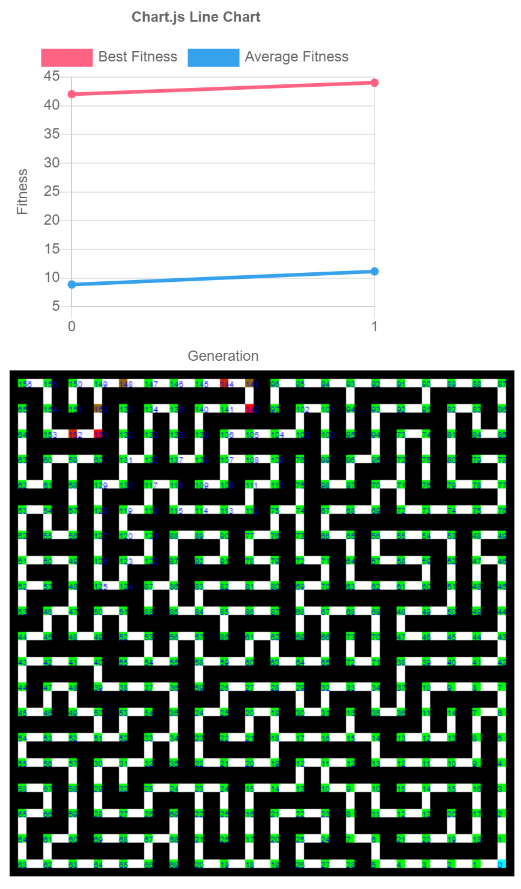
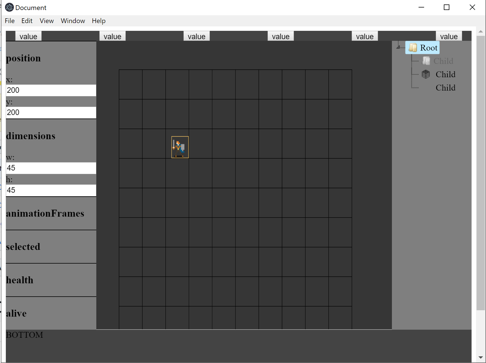
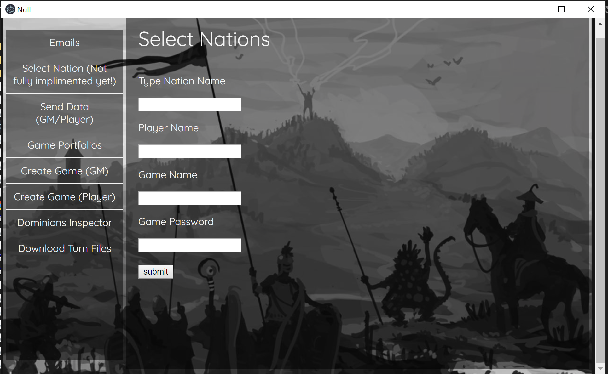
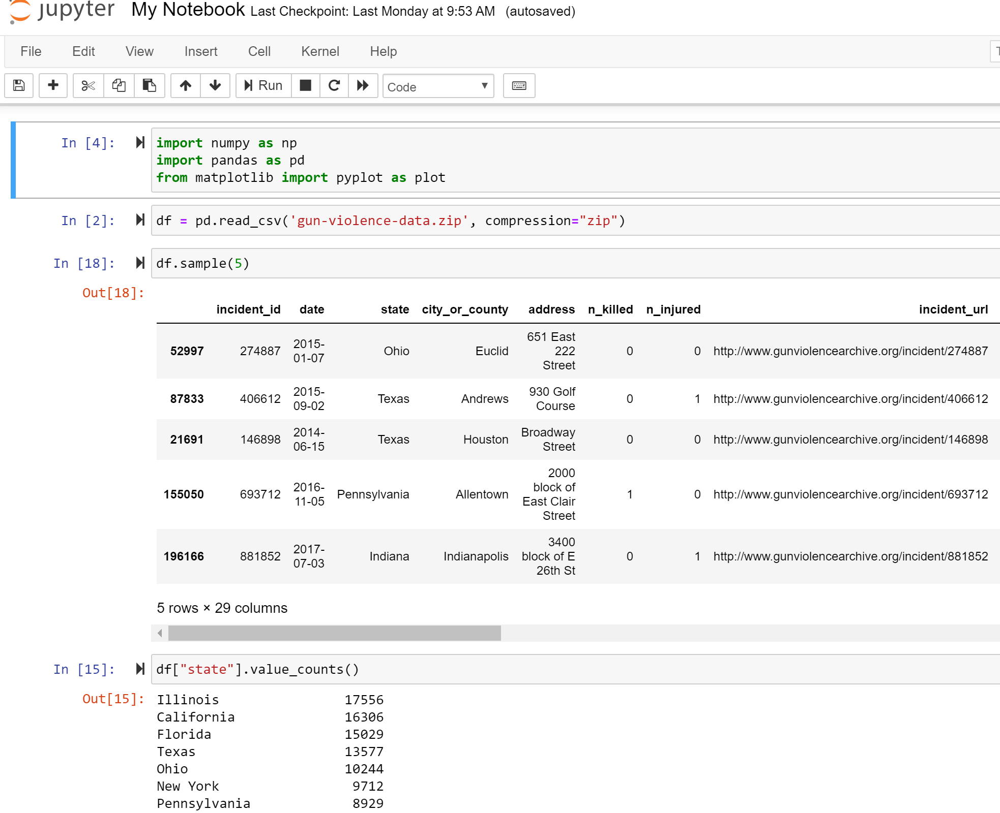

Perlin Noise Generator with P5 JS
click image to view project
While researching world generation in video games I ran into an
article taling about Perlin Noise. Perlin noise is an algortihm
similar to random noise but it is capable of interplating between
values creating a gradiant effect.
Maze Solving Genetic Algortihm with P5 JS
click image to view project

As my interests became more focused on machine learning in the recent
years I searched for diffrent forms of AI that I was not aware of.
Genetic Algorithms was one of them. Genetic Algorithms uses the
concept of evolution to solve problems. The idea interested me and as
a result of research and practice I challenged myself to model a
genetic algortihm that could solve mazes. Of course it isn't as
powerful as A* (which it uses funny enough) but it was fun and
education experience over all.
Dungeons and Dragons World Builder with Electron

Because of my interest in Dungeons and Dragons and the lack of (free)
online tools to play it with friends I experiemented with the idea of
creating my own platform for creating worlds and interacting with
other players using electron. The idea never blossomed to fruition but
it still was a great learning experience.
Dominions 5 Turn Manager with Electron and Google Services API

My friends and I play a game where it's multiplayer is based on email
services (i know...), because of the discouraging complexity I made an
application to make playing and sending data over email allot more
efficient.
LED Color Changing app with ESP8266 and MIT app inventor
While experimenting with a WIFI enabled microcontroler called the
ESP8266 I made and app that is able to connect to a web server on the
microcontroler and send RGB data to it so that it could change an
RGBLED.
Analysis of Kaggle Gun Violence DataSet (Ongoing)

Data science has been an interest of mine for a long time and on the
side I like to do my own personal investigations on random datasets to
not only improve but to also gain intuition on the context of the data
set. You can find the data set
here